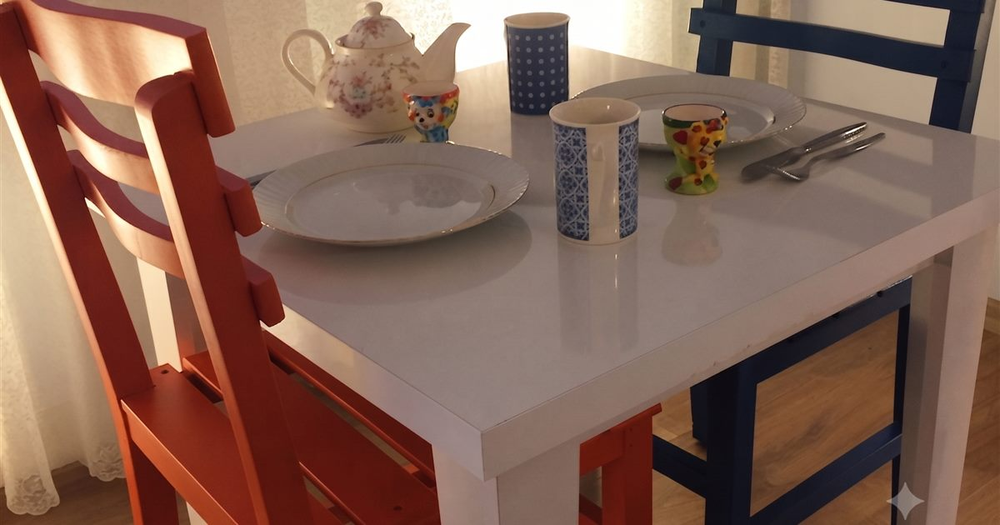

Örnek Çalışmalar
Aynı fotoğraf, yalnızca ışık ve netlik farkı
Ayırıcıyı sürükleyerek öncesi/sonrası farkını görün. Odada olmayan hiçbir şey eklenmez — yalnızca ışık, renk, netlik ve düzen düzeltilir.
ÖncesiSonrası


Kahvaltı alanı — karanlık kare, ferah ve davetkar bir sunuma dönüştü.
ÖncesiSonrası


Otel odası — loş ışık dengelendi, renkler ve doku belirginleşti.
ÖncesiSonrası


Konaklama odası — netlik ve beyaz dengesi profesyonel standarda getirildi.
Sitedeki örnek görseller anonimdir; hiçbir işletme adı, konum veya kimlik bilgisi içermez. Size hazırlayacağımız ön izleme yalnızca size özeldir.

Vitrin Studio örnek çalışması — Kahvaltı alanı, iyileştirme sonrası
Sıra Sizde
Kendi fotoğrafınızda görün
İşletmenizin bir fotoğrafını gönderin; aynı dönüşümü sizin karenizde ücretsiz gösterelim. Hiçbir yükümlülük doğmaz.